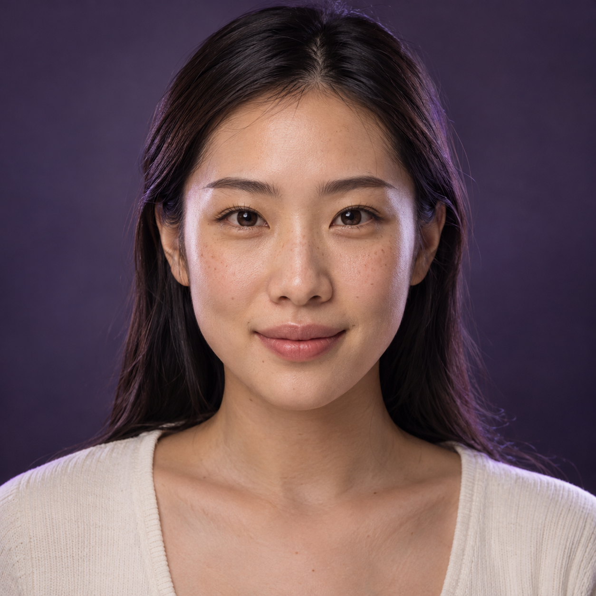

BOUNDLESS EXPLORER · 无界体验家
美，不必设限。
每一种感受，都值得被听见。
每一个你，都可以自由表达美。
AI 的随时陪伴，和真人的温暖支持。
让看不清、手不便、或不敢开始，都不再成为距离。
照片在本机处理没有审美评分可听，也可看

BEAUTY, ON YOUR TERMS.
按自己的方式，美。
让美，被听见色彩与变化，用声音告诉你
不被定义 · 自在表达
01 — EVERY BEAUTY BELONGS
DESIGNED AROUND YOU
从你的感受出发
选择一种方式，开始今天的体验。
A LITTLE TECHNOLOGY. A LOT OF CARE.
一段完整的旅程，一直有人同行。
01 / LISTEN FIRST
先聊聊你，再聊美。
不必懂术语，也不用担心问得太简单。
小界 · 美妆陪伴
你的感受，比标准答案更重要
可输入文字或点选上方话题。语音输入由浏览器提供，可能使用其语音服务。
02 / EXPLORE YOUR COLOR
这一抹，由你定义。
试试看喜欢的颜色，再听听它的感觉。
照片试色
YOUR BEAUTY. YOUR CHOICE.
示例唇区已准备好。选择自己的照片后，会在本机定位唇部。
THE COLOR EDIT
01 — 04选一抹，感受不同。
轻透浓郁
示例色号，不对应在售商品。屏幕预览与实际上唇会有差异。
BEAUTY YOU CAN HEAR
把变化，说给你听。
描述来自所选色彩与浓度，未对你的外貌或肤色作出判断。
03 / A HUMAN TOUCH
科技陪你探索，人陪你完成。
真正需要动手、专业判断和面对面陪伴时，我们一起向前一步。
FIND YOUR SUPPORT